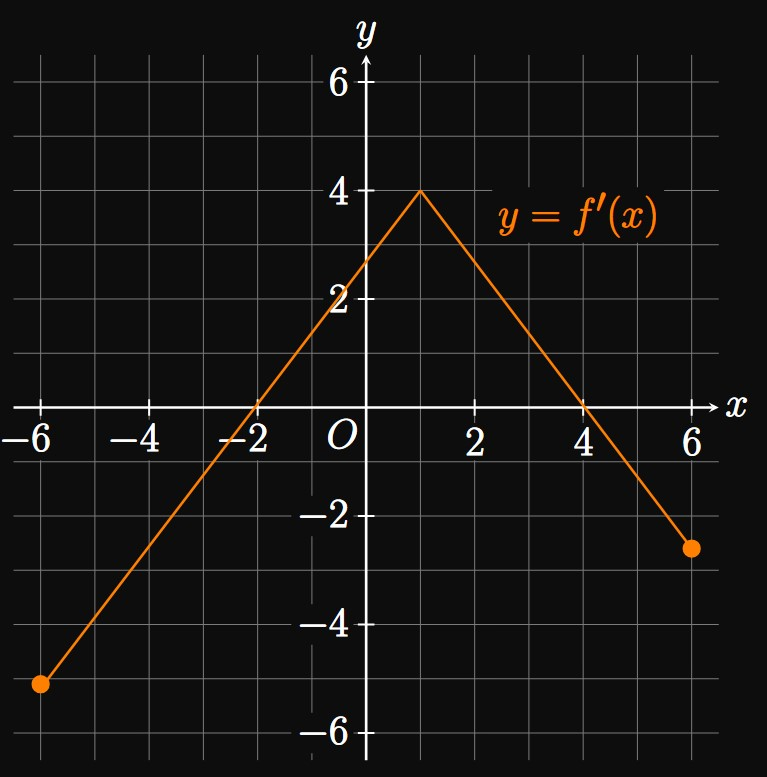

3.4 Exercise Solutions — Using the First and Second Derivatives
EXERCISE 1
What does the sign of \(f'(x)\)
tell you about \(f\) at \(x \ques\)
SOLUTION
If \(f'(x) \gt 0,\) then \(f\) is increasing at \(x.\)
If \(f'(x) \lt 0,\) then \(f\) is decreasing at \(x.\)
EXERCISE 2
What does the sign of \(f''(x)\)
tell you about the graph of \(f\) at \(x \ques\)
SOLUTION
If \(f''(x) \gt 0,\) then the graph of \(f\) is concave up at \(x.\)
This means that near \(x,\) the graph of \(f\) lies above its tangents.
If \(f''(x) \lt 0,\) then the graph of \(f\) is concave down at \(x,\)
meaning the graph lies below its tangents.
EXERCISE 3
Define an inflection point.
How do you find one?
SOLUTION
At an inflection point, the graph of \(f\)
switches concavity—that is,
from concave up to concave down or from concave down to concave up.
We find inflection points by finding when \(f''(x)\) changes sign.
If \(f''\) is continuous, then we find the solutions to \(f''(x) = 0\)
and test whether \(f''\) changes sign at those points.
EXERCISE 4
What does the Second-Derivative Test state, and when is it inconclusive?
SOLUTION
Let \(f'(c) = 0.\)
The Second-Derivative Test asserts that \(f\) has
a relative minimum at \(c\) if \(f''(c) \gt 0\)
a relative maximum at \(c\) if \(f''(c) \lt 0.\)
The test is inconclusive if \(f''(c) = 0\) or if \(f''(c)\) is undefined.
EXERCISE 5
In Figure 1,
the graph of \(f(x)\) is shown.
Points \(A,\) \(B,\) and \(C\) are labeled.
At which point(s) is the graph of \(f\) increasing and concave up?
At which point(s) is the graph of \(f\) increasing and concave down?
Identify the location of the graph's inflection point.
SOLUTION
The function \(f\) is increasing at points \(A\) and \(C.\)
In addition, at point \(C\) the graph is concave up because the graph lies above its tangents
near \(C.\)
Thus, at \(C\) the graph is increasing and concave up.
At point \(A,\) the graph is increasing.
The graph is concave down at that point
because the graph is below its tangents near \(A.\)
Point \(B\) is the inflection point because \(f\) passes through its tangent
at \(B.\)
EXERCISE 6

The graph of \(y = f'(x)\) for \(-6 \leq x \leq 6\) is shown in Figure 2.
Over what interval(s) is \(f\) increasing, and over what interval(s) is \(f\) decreasing?
For what values of \(x\) is the graph of \(f\) concave up?
Where does the graph of \(f\) have an inflection point?
SOLUTION
The function \(f\) is increasing when \(f' \gt 0.\)
From Figure 2,
\(f'(x) \gt 0\) for \(-2 \lt x \lt 4.\)
Thus, \(f\) is increasing over the interval \([-2, 4].\)
The graph of \(f\) is concave up when \(f'' \gt 0.\)
From the graph, \(f'(x)\) is increasing for \(-6 \leq x \leq 1.\)
Hence, on this interval the slope of \(f'(x)\) is positive
and so \(f''(x) \gt 0.\)
The graph of \(f\) is therefore concave up over \((-6, 1).\)
When the graph of \(f\) switches concavity, \(f\) has an inflection point.
The graph shows that \(f'\) changes from increasing to decreasing at \(x = 1.\)
At this point, the sign of the slope of \(f'\)—which is \(f''\)—swaps.
So the graph of \(f\) has an inflection point when \(x = 1.\)
Although \(f''(1)\) is undefined (due to the sharp turn in \(f'\)),
\(f''\) only needs to change sign at \(x = 1\)
for \(f\) to have an inflection point there.
EXERCISE 7
For
\[\ds f(x) = x^2 - 6x\]
find where the function is increasing and where it is decreasing.
SOLUTION
The function \(f\) is increasing when \(f'(x) \gt 0\) and
decreasing when \(f'(x) \lt 0.\)
We differentiate to find
\[f'(x) = 2x - 6 \pd\]
We see \(f'(x) \gt 0\) for \(x \gt 3,\)
so \(f\) is increasing over \([3, \infty).\)
Also, \(f'(x) \lt 0\) for \(x \lt 3,\)
meaning \(f\) is decreasing over \((-\infty, 3].\)
EXERCISE 8
For
\[\ds g(x) = 3x^2 + 12x - 5\]
find where the function is increasing and where it is decreasing.
SOLUTION
The function \(g\) is increasing when \(g'(x) \gt 0\) and
decreasing when \(g'(x) \lt 0.\)
The first derivative is
\[g'(x) = 6x + 12 \pd\]
We see \(g'(x) \gt 0\) for \(x \gt -2,\)
so \(g\) is increasing over \([-2, \infty).\)
Conversely, \(g'(x) \lt 0\) for \(x \lt -2,\)
meaning \(g\) is decreasing over \((-\infty, -2].\)
EXERCISE 9
For
\[\ds f(t) = t - \ln t\]
find where the function is increasing and where it is decreasing.
SOLUTION
We know that \(f\) is increasing when \(f' \gt 0\) and
decreasing when \(f' \lt 0.\)
Differentiating gives
\[f'(t) = 1 - \frac{1}{t} \pd\]
For \(0 \lt t \lt 1,\)
\(f'(t) \lt 0.\)
So \(f\) is decreasing over \((0, 1].\)
For \(t \gt 1,\)
\(f'(t) \gt 0.\)
Consequently, \(f\) is increasing over \([1, \infty).\)
EXERCISE 10
For
\[f(x) = x^3 \cma x = 1\]
determine the concavity of the function's graph at the given point.
SOLUTION
The concavity of \(f\) is denoted by the sign of \(f''(x).\)
If the second derivative is positive at a point, then the graph of \(f\) is concave up there;
otherwise, if the second derivative is negative, then the graph of \(f\) is concave down.
We take derivatives:
\[f'(x) = 3x^2 \lspace f''(x) = 6x \pd\]
Since \(f''(1) = 6 \gt 0,\) the graph of \(f\)
is concave up at \(x = 1.\)
EXERCISE 11
For
\[f(x) = 3 - x^2 \cma x = 2\]
determine the concavity of the function's graph at the given point.
SOLUTION
The sign of \(f''(x)\) determines the concavity of \(f.\)
At a point, the graph of \(f\) is concave up if \(f''(x) \gt 0;\)
the graph is concave down if \(f''(x) \lt 0.\)
We take derivatives:
\[f'(x) = -2x \lspace f''(x) = -2 \pd\]
Since \(f''(2) = -2 \lt 0,\) the graph of \(f\)
is concave down at \(x = 2.\)
EXERCISE 12
For
\[f(x) = 6x^4 \cma x = 0\]
determine the concavity of the function's graph at the given point.
SOLUTION
The sign of \(f''(x)\) determines the concavity of \(f.\)
At a point, the graph of \(f\) is concave up if \(f''(x) \gt 0;\)
the graph is concave down if \(f''(x) \lt 0.\)
We take derivatives:
\[f'(x) = 24x^3 \lspace f''(x) = 72x^2 \pd\]
Since \(f''(0) = 0,\) the graph of \(f\)
is neither concave up nor concave down at \(x = 0.\)
EXERCISE 13
For
\[\ds f(x) = x^3 - x\]
find the \(x\)-coordinates of any inflection points of \(f\).
SOLUTION
The function \(f\) has an inflection point
at a point if and only if the graph of \(f\) changes concavity at
that point.
Since \(f\) is a polynomial, its second derivative is continuous.
Our strategy is then to equate the second derivative to \(0\) to locate its sign changes.
Taking two derivatives, we find
\[
\ba
f'(x) &= 3x^2 - 1\nl
f''(x) &= 6x \pd
\ea
\]
Solving \(f''(x) = 0\) gives \(x = 0.\)
For \(x \lt 0,\) \(f''(x) \lt 0;\)
for \(x \gt 0,\) \(f''(x) \gt 0.\)
The second derivative \(f''(x)\) changes sign at \(x = 0.\)
So \(x = 0\) is the \(x\)-coordinate of the only inflection point of \(f.\)
EXERCISE 14
For
\[\ds f(x) = \tfrac{1}{2} x^3 - x^2 + x + 1\]
find the \(x\)-coordinates of any inflection points of \(f\).
SOLUTION
The function \(f\) has an inflection point
at a point if and only if the graph of \(f\) changes concavity at
that point.
Because \(f\) is a polynomial, its second derivative is continuous.
We therefore equate the second derivative to \(0\) to locate its sign changes.
We differentiate to obtain
\[
\ba
f'(x) &= \tfrac{3}{2} x^2 - 2x + 1 \nl
f''(x) &= 3x - 2 \pd
\ea
\]
Solving \(f''(x) = 0\) gives \(x = 2/3.\)
For \(x \lt 2/3,\) \(f''(x) \lt 0;\)
for \(x \gt 2/3,\) \(f''(x) \gt 0.\)
The second derivative \(f''(x)\) changes sign at \(x = 2/3.\)
So this value is the \(x\)-coordinate of the only inflection point of \(f.\)
EXERCISE 15
For
\[\ds f(x) = \tfrac{1}{4}x^4 + 2\]
find the \(x\)-coordinates of any inflection points of \(f\).
SOLUTION
Recall that \(f\) has an inflection point
at a point if and only if the graph of \(f\) changes concavity at
that point.
The second derivative of \(f\) is continuous,
so we can equate second derivative to \(0\) to locate its sign changes.
We differentiate to get
\[
\ba
f'(x) &= x^3 \nl
f''(x) &= 3x^2 \pd
\ea
\]
Solving \(f''(x) = 0\) gives \(x = 0.\)
But \(f''(x)\) does not change sign at \(x = 0;\)
the function is always nonnegative.
Therefore, \(f\) has no inflection points.
EXERCISE 16
For
\[\ds f(x) = 2x^2 - \tfrac{1}{5} x^5\]
find the \(x\)-coordinates of any inflection points of \(f\).
SOLUTION
The function \(f\) has an inflection point wherever \(f''(x)\) changes sign.
We therefore seek sign changes in \(f''(x).\)
Differentiating, we get
\[
\ba
f'(x) &= 4x - x^4 \nl
f''(x) &= 4 - 4x^3 \pd
\ea
\]
Letting \(f''(x) = 0\) shows
\[4x^3 = 4 \implies x = 1 \pd\]
For \(x \lt 1,\) \(f''(x) \gt 0;\)
for \(x \gt 1,\) \(f''(x) \lt 0.\)
Since \(f''(x)\) changes sign at \(x = 1,\)
\(f\) has an inflection point at \(x = 1.\)
EXERCISE 17
For
\[\ds f(x) = \tfrac{1}{12} x^4 - \tfrac{5}{6} x^3 - 3x^2 + x - 7\]
find the \(x\)-coordinates of any inflection points of \(f\).
SOLUTION
A function \(f\) has an inflection point
at a point if and only if the graph of \(f\) changes concavity at
that point.
Because the given function is a polynomial, its second derivative is continuous.
Thus, we equate the second derivative to \(0\) to locate its sign changes.
Differentiating, we have
\[
\ba
f'(x) &= \tfrac{1}{3} x^3 - \tfrac{5}{2} x^2 - 6x + 1 \nl
f''(x) &= x^2 - 5x - 6 = (x - 6)(x + 1)\pd
\ea
\]
Solving \(f''(x) = 0\) gives \(x = -1\) and \(x = 6.\)
We now check whether \(f''(x)\) changes sign at each value:
For \(x \lt -1,\) \(f''(x) \gt 0;\)
for \(-1 \lt x \lt 6,\) \(f''(x) \lt 0;\)
for \(x \gt 6,\) \(f''(x) \gt 0.\)
Thus, at both \(x = -1\) and \(x = 6,\)
\(f''(x)\) changes sign.
Hence, both values are locations of inflection points of \(f.\)
Remember to check for sign changes in \(f''(x);\)
it is not guaranteed that all solutions to \(f''(x) = 0\)
are \(x\)-coordinates of inflection points of \(f.\)
EXERCISE 18
For
\[\ds f(x) = x^2 + \sqrt{x}\]
find the \(x\)-coordinates of any inflection points of \(f\).
SOLUTION
We seek sign changes in \(f''(x)\) because \(f\)
has an inflection point whenever \(f''(x)\) changes sign.
Differentiating \(f\) gives
\[
\ba
f'(x) &= 2x + \tfrac{1}{2} x^{-1/2} \nl
f''(x) &= 2 - \tfrac{1}{4} x^{-3/2} \pd
\ea
\]
Letting \(f''(x) = 0\) shows
\[x = (2 \cdot 4)^{-2/3} = \tfrac{1}{4} \pd\]
For \(0 \lt x \lt 1/4,\) \(f''(x) \lt 0;\)
for \(x \gt 1/4,\) \(f''(x) \gt 0.\)
Because \(f''(x)\) changes sign at \(x = 1/4,\)
this value is the \(x\)-coordinate of the only inflection point of \(f.\)
EXERCISE 19
For
\[\ds f(x) = x^2 - e^x\]
find the \(x\)-coordinates of any inflection points of \(f\).
SOLUTION
Because \(f\) has an inflection point whenever \(f''(x)\) switches sign,
we set \(f''(x) = 0\) to find points at which this change occurs.
Differentiating \(f\) gives
\[
\ba
f'(x) &= 2x - e^x \nl
f''(x) &= 2 - e^x \pd
\ea
\]
Letting \(f''(x) = 0\) shows
\[e^x = 2 \implies x = \ln 2 \pd\]
For \(x \lt \ln 2,\) \(f''(x) \gt 0;\)
for \(x \gt \ln 2,\) \(f''(x) \lt 0.\)
Because \(f''(x)\) changes sign at \(x = \ln 2,\)
this value is the \(x\)-coordinate of the inflection point of \(f.\)
EXERCISE 20
For
\[\ds f(x) = 7x - \frac{1}{x^3}\]
find the \(x\)-coordinates of any inflection points of \(f\).
SOLUTION
We seek sign changes in \(f''(x)\)
because \(f\) has an inflection point whenever its second derivative changes sign.
We differentiate to find
\[
\ba
f'(x) &= 7 + \frac{3}{x^4} \nl
f''(x) &= -\frac{12}{x^5} \pd
\ea
\]
The equation \(f''(x) = 0\) has no solution.
Moreover, at \(x = 0\) the function \(f''(x)\)
is discontinuous.
Hence, \(f\) has no inflection points.
EXERCISE 21
For
\[\ds f(x) = \tfrac{1}{4}x^2 + \sin x \cma 0 \leq x \leq \pi\]
find the \(x\)-coordinates of any inflection points of \(f\).
SOLUTION
We must find sign changes in \(f''(x)\) because the graph of \(f\)
has an inflection point whenever \(f''(x)\) changes sign.
We take two derivatives of \(f \col\)
\[
\ba
f'(x) &= \tfrac{1}{2} x + \cos x \nl
f''(x) &= \tfrac{1}{2} - \sin x \pd
\ea
\]
Letting \(f''(x) = 0\) shows
\[\sin x = \tfrac{1}{2} \implies x = \tfrac{\pi}{6} \cma \tfrac{5 \pi}{6} \pd\]
For \(0 \lt x \lt \pi/6,\) \(f''(x) \gt 0.\)
For \(\pi/6 \lt x \lt 5 \pi/6,\) \(f''(x) \lt 0.\)
For \(x \gt 5 \pi/6,\) \(f''(x) \gt 0.\)
So \(f''(x)\) changes sign at both \(x = \pi/6\) and \(x = 5 \pi/6.\)
Consequently, both values are the locations of inflection points of \(f.\)
EXERCISE 22
For
\[\ds f(x) = 2x^2 - 4 \cos x \cma 0 \leq x \leq 2\pi\]
find the \(x\)-coordinates of any inflection points of \(f\).
SOLUTION
We must find sign changes in \(f''(x)\) because the graph of \(f\)
has an inflection point whenever \(f''(x)\) changes sign.
The first two derivatives of \(f\) are
\[
\ba
f'(x) &= 4x + 4 \sin x \nl
f''(x) &= 4 + 4 \cos x \pd
\ea
\]
Letting \(f''(x) = 0\) shows
\[4 \cos x = -4 \implies x = \pi \pd\]
For \(0 \lt x \lt \pi,\) \(f''(x) \gt 0;\)
for \(\pi \lt x \lt 2 \pi,\) \(f''(x) \gt 0;\)
The second derivative of \(f\) does not change sign at \(x = \pi.\)
The function \(f\) therefore does not have any inflection points.
EXERCISE 23
For
\[\ds f(x) = 4x^{3/2} - x^2\]
find the \(x\)-coordinates of any inflection points of \(f\).
SOLUTION
Our strategy is to find sign changes in \(f''(x);\) the graph of \(f\)
has an inflection point whenever \(f''(x)\) changes sign.
The first two derivatives of \(f\) are
\[
\ba
f'(x) &= 6x^{1/2} - 2x \nl
f''(x) &= 3x^{-1/2} - 2 \pd
\ea
\]
Letting \(f''(x) = 0\) shows
\[3x^{-1/2} = 2 \implies x = \par{\tfrac{2}{3}}^{-2} = \tfrac{9}{4}\]
For \(x \lt 9/4,\) \(f''(x) \gt 0;\)
for \(x \gt 9/4,\) \(f''(x) \lt 0.\)
Since \(f''(x)\) changes sign at \(x = 9/4,\)
\(f\) has an inflection point at \(x = 9/4.\)
EXERCISE 24
For
\[\ds f(x) = x^2 + 9\sqrt[3]{x}\]
find the \(x\)-coordinates of any inflection points of \(f\).
SOLUTION
We seek sign changes in \(f''(x),\)
as \(f\) has an inflection point whenever its second derivative changes sign.
Differentiating, we get
\[
\ba
f'(x) &= 2x + 3x^{-2/3} \nl
f''(x) &= 2 - 2x^{-5/3} \pd
\ea
\]
Equating \(f''(x) = 0,\) we obtain
\[2x^{-5/3} = 2 \implies x = 1 \pd\]
For \(x \lt 1,\) \(f''(x) \lt 0;\)
for \(x \gt 1,\) \(f''(x) \gt 0.\)
Since \(f''(x)\) changes sign at \(x = 1,\)
\(f\) has an inflection point at \(x = 1.\)
EXERCISE 25
For
\[\ds f(x) = \sin x - \cos x \cma 0 \leq x \leq \pi\]
find the \(x\)-coordinates of any inflection points of \(f\).
SOLUTION
We aim to find sign changes in \(f''(x)\) because the graph of \(f\)
has an inflection point whenever \(f''(x)\) changes sign.
The first two derivatives of \(f\) are
\[
\ba
f'(x) &= \cos x + \sin x \nl
f''(x) &= -\sin x + \cos x \pd
\ea
\]
Letting \(f''(x) = 0\) shows
\[\sin x = \cos x \implies x = \tfrac{\pi}{4} \pd\]
For \(x \lt \pi/4,\) \(f''(x) \gt 0;\)
for \(\pi/4 \lt x \lt \pi,\) \(f''(x) \lt 0.\)
Since \(f''(x)\) changes sign at \(x = \pi/4,\)
\(f\) has an inflection point at \(x = \pi/4.\)
EXERCISE 26
For
\[\ds f(x) = \frac{8}{x} - x^2\]
find the \(x\)-coordinates of any inflection points of \(f\).
SOLUTION
We seek sign changes in \(f''(x)\)
because \(f\) has an inflection point whenever its second derivative changes sign.
We differentiate to find
\[
\ba
f'(x) &= -\frac{8}{x^2} - 2x \nl
f''(x) &= \frac{16}{x^3} - 2 \pd
\ea
\]
Equating \(f''(x) = 0,\) we obtain
\[\frac{16}{x^3} = 2 \implies x = 2 \pd\]
For \(x \lt 2,\) \(f''(x) \gt 0;\)
for \(x \gt 2,\) \(f''(x) \lt 0.\)
Since \(f''(x)\) changes sign at \(x = 2,\)
\(f\) has an inflection point at \(x = 2.\)
EXERCISE 27
Let \(f(x) = 2x^3 + 3x^2 - 12x + 1.\)
Determine the critical numbers of \(f.\)
Using the Second-Derivative Test, classify each critical number as the location of
a relative minimum, relative maximum, or neither of \(f.\)
Where is the graph of \(f\) concave up?
SOLUTION
To find the critical numbers, we equate \(f'(x) = 0.\)
Differentiating gives
\[f'(x) = 6x^2 + 6x - 12 \pd\]
We then have
\[6x^2 + 6x - 12 = 6(x^2 + x - 2) = 6(x + 2)(x - 1) = 0 \pd\]
The solutions are \(x = -2\) and \(x = 1,\)
so these are the critical numbers of \(f.\)
The Second-Derivative Test states that a critical number \(c\)
corresponds to a relative minimum of \(f\) if \(f''(c) \gt 0\)
and a relative maximum of \(f\) if \(f''(c) \lt 0.\)
We have
\[f''(x) = 12x + 6 \pd\]
Then
\[
\ba
f''(-2) &= 12(-2) + 6 \lt 0 \nl
f''(1) &= 12(1) + 6 \gt 0 \pd
\ea
\]
Hence, \(f\) has a relative maximum at \(x = -2\)
and a relative minimum at \(x = 1.\)
The graph of \(f\) is concave up when \(f''(x) \gt 0 \col\)
\[12x + 6 \gt 0 \implies x \gt -\tfrac{1}{2} \pd\]
EXERCISE 28
Use the Second-Derivative Test to show that \(f(x) = x^2 - \ln x\)
has a relative minimum when \(x = \sqrt{2}/2.\)
SOLUTION
We take derivatives:
\[f'(x) = 2x - \frac{1}{x} \lspace f''(x) = 2 + \frac{1}{x^2} \pd\]
The solution to \(f'(x) = 0\) is \(x = \sqrt{2}/2.\)
Substituting this critical number into \(f''(x)\) shows
\[f'' \par{\tfrac{\sqrt 2}{2}} = 2 + \frac{1}{(\sqrt{2}/2)^2} = 4 \pd\]
Because \(f''(\sqrt{2}/2) \gt 0,\)
the Second-Derivative Test states that \(f\) has a relative minimum
at \(x = \sqrt{2}/2.\)
EXERCISE 29
Using the Second-Derivative Test, show that \(f(x) = x^3 + 1/x^2\)
has a relative minimum when \(x = \sqrt[5]{2/3}.\)
SOLUTION
Differentiating shows
\[f'(x) = 3x^2 - \frac{2}{x^3} \lspace f''(x) = 6x + \frac{6}{x^4} \pd\]
The solution to \(f'(x) = 0\) is \(x = \sqrt[5]{2/3}.\)
The second derivative \(f''(x)\) is positive for all \(x \gt 0.\)
Hence, \(f''(\sqrt[5]{2/3}) \gt 0.\)
The Second-Derivative Test therefore states that \(f\) has a relative minimum
at \(x = \sqrt[5]{2/3}.\)
EXERCISE 30
Consider \(f(x) = \ln x - \sqrt{x}.\)
Use the Second-Derivative Test to show that \(f\) has a relative maximum when \(x = 4.\)
SOLUTION
We differentiate to get
\[f'(x) = \frac{1}{x} - \tfrac{1}{2} x^{-1/2} \lspace f''(x) = -\frac{1}{x^2} + \tfrac{1}{4} x^{-3/2} \pd\]
We solve \(f'(x) = 0,\) as follows:
\[x^{-1} - \tfrac{1}{2} x^{-1/2} = 0 \implies x = 4 \pd\]
In addition,
\[f''(4) = -\frac{1}{4^2} + \frac{1}{4(4)^{3/2}} = -\tfrac{1}{32} \pd \]
Since \(f''(4) \lt 0,\)
by the Second-Derivative Test \(f\) has a relative maximum
at the critical number \(x = 4.\)
EXERCISE 31
A cubic function takes the form \(f(x) = ax^3 + bx^2 + cx + d.\)
Prove that the graph of \(f\) has an inflection point when \(x = -b/3a.\)
SOLUTION
We take derivatives of \(f \col\)
\[
\ba
f'(x) &= 3ax^2 + 2bx + c \nl
f''(x) &= 6ax + 2b \pd
\ea
\]
Solving \(f''(x) = 0\) shows \(x = -b/3a.\)
At this point, \(f''(x)\) changes sign.
Hence, \(x = -b/3a\) is the location of an inflection point of \(f.\)
This result is independent of \(c\) and \(d,\) meaning
the first- and zeroth-degree coefficients don't impact the location of the inflection point!
EXERCISE 32
Consider the quadratic \(f(x) = ax^2 + bx + c\) for \(a \gt 0.\)
Using the Second-Derivative Test,
prove that the vertex of \(f\) is a minimum.
SOLUTION
Differentiating \(f\) twice gives
\[f'(x) = 2ax + b \and f''(x) = 2a \pd\]
Then letting \(f'(x) = 0\) gives \(x = -b/2a\) as the location of the quadratic's vertex,
the only critical point of \(f.\)
Since \(a \gt 0,\) \(f''(x) \gt 0\) for all \(x,\) including at the vertex.
Thus, \(f''(-b/2a) \gt 0\) and so the Second-Derivative Test states that \(f\) has a relative minimum at \(x = -b/2a.\)
This point is also the absolute minimum of \(f\) since
\(\lim_{x \to -\infty} f(x) = \infty\) and \(\lim_{x \to \infty} f(x) = \infty.\)
EXERCISE 33
Show that \(f(x) = \sin x\) has inflection points when \(f(x) = 0.\)
SOLUTION
The solutions to \(f(x) = 0\) are \(x = n\pi,\) where \(n\) is an integer.
Differentiating gives
\[f'(x) = \cos x \and f''(x) = -\sin x \pd \]
We see \(f''(x) = -f(x),\)
and the solutions to \(-f(x) = 0\) are also \(x = n \pi.\)
You may verify that at these values, \(f''(x)\) changes sign.
Thus, \(f\) has inflection points when \(x = n \pi\)—the same solutions to \(f(x) = 0.\)
EXERCISE 34
In Figure 3,
determine which graph is \(f,\)
which graph is \(f',\)
and which graph is \(f''.\)
SOLUTION
To connect \(f,\) \(f',\) and \(f'',\)
we consider important features—extrema, zeros, intervals of increasing or decreasing—of any one graph
and see how well they align with the other two graphs.
Let's begin with graph I,
whose minimum is at point \(A.\)
If II or III is the derivative of I, then
either graph must cross the \(x\)-axis at the \(x\)-coordinate of \(A.\)
But neither II nor III crosses the \(x\)-axis when graph I attains its minimum.
In addition, I is decreasing for all \(x\) to the left of \(A,\)
but neither II nor III is entirely negative over the same interval.
Thus, II and III cannot be derivatives of I,
so graph I must be \(f''.\)
Now we pay attention to another graph—for example, II,
which has extrema at points \(B,\) \(C,\) and \(D.\)
The question is whether II is \(f\) or \(f'.\)
Graph III intersects the \(x\)-axis
when II attains its extrema.
Graph III is positive between \(B\) and \(C,\) the region over which II is increasing,
and is negative between \(C\) and \(D,\) when II is decreasing.
Therefore, III must be the derivative of II.
So II is \(f,\) III is \(f',\) and I is \(f''.\)
EXERCISE 35
The standard Normal distribution has a mean of \(0\) and
a standard deviation of \(1\) (Figure 4).
The function that defines the curve is
\[f(x) = \frac{1}{\sqrt{2 \pi}} e^{-x^2/2} \pd\]
Through this standardization, \(x\) represents the number of standard deviations
away from the mean of \(0.\)
Show that the curve has inflection points located one
standard deviation away from the mean—that is,
at \(x = -1\) and \(x = 1.\)
SOLUTION
Our goal is to show that \(f''(x)\) changes sign at \(x = -1\) and \(x = 1.\)
Taking derivatives, we get
\[
\ba
f'(x) &= -\frac{1}{\sqrt{2 \pi}} x e^{-x^2/2} \cma \text{and} \nl
f''(x) &= -\frac{1}{\sqrt{2 \pi}} \par{e^{-x^2/2} - x^2 e^{-x^2/2}} \nl
&= -\frac{1}{\sqrt{2 \pi}} e^{-x^2/2} \par{1 - x^2} \pd
\ea
\]
Thus, \(f''(x) = 0\) when
\(x^2 - 1 = 0,\)
or \(x = -1\) and \(x = 1.\)
When \(x = -1,\) \(f''\) changes sign from positive to negative;
when \(x = 1,\) \(f''\) changes sign from negative to positive.
Thus, \(f\) has inflection points at both these values.